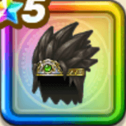

伝説の勇者のはちがね
攻略班 9.5点 / ????系への耐性+5%怪人系への耐性+5%水系への耐性+5%怪人系への耐性+5%スキルの斬撃ダメージ+6%【晴れ】デイン属性斬撃・体技ダメージ+3%デイン属性斬撃・体技ダメージ+8%
くわしい特徴
【レベル別習得スキル】 Lv1????系への耐性+5% Lv5戦闘終了時にMPを3回復する Lv8怪人系への耐性+5% Lv10スキルの斬撃ダメージ+6% Lv12【晴れ】デイン属性斬撃・体技ダメージ+3% Lv15デイン属性斬撃・体技ダメージ+8% Lv18すばやさ+5 Lv20水系への耐性+5% Lv23守備力+5 Lv25怪人系への耐性+5% 【限界突破スキル】 1凸攻撃力+10 2凸すばやさ+12 3凸守備力+10 4凸さいだいHP+12